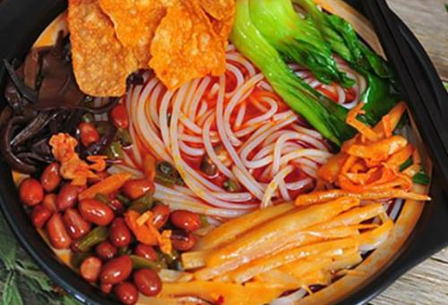

- 
我学号前前一位小可爱学号是201916180205，她叫梁慧，因为我学号前一位不知名的小姐姐不存在，就不介绍她啦！
我学号后一位小憨批学号是201916180208，大名鼎鼎的郑园，🤫别和她说我是这样描述她的，不然我被乱棒打死。
我喜欢各种各样的美食，如果说叫我说一款自己家乡的美食，那我肯定选螺丝粉啦，它满足我全部味蕾。 “一大碗”螺蛳粉由柳州特有的软滑爽口的米粉，加上酸笋、木耳、花生、油炸腐竹、黄花菜、鲜嫩青菜等配料及浓郁适度的酸辣味和煮烂螺蛳的汤水调合而成， 但又因有奇特鲜美的螺蛳汤，使你欲罢不能，吃一想二。“不食螺蛳粉，枉为广西人”。广西的螺蛳粉，闻名遐迩，据说在很久广西人只有单一的螺蛳吃法，除了一些配菜，几乎很少还有人在加入其它的什么东西。 上世纪80年代初期的一天深夜，几位外地人赶到柳州，饥肠辘辘中找到一家快要打烊的米粉摊点，可是米粉必用的骨头汤已经没有了，只剩一锅煮螺剩下的螺蛳汤，摊主情急之下，把米粉放到螺蛳汤里煮， 又加上青菜以及花生等配菜，这几个外地人吃后，大呼好吃。摊主将此记在心中，逐步完善其配料和制作，遂慢慢形成了现在螺蛳粉的雏形。